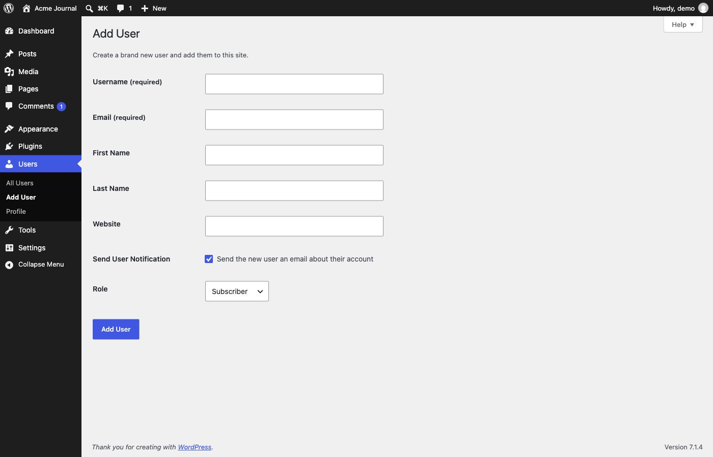

init Initial view

Screen captures · p016
A form for creating a new user account: username, email, optional name and website, a notification checkbox and a role. The password row was hidden in this capture.

| Element | Type | Reason |
|---|---|---|
| Skip to main content | a | Not clicked (pages are opened by URL) |
| Skip to toolbar | a | Not clicked (pages are opened by URL) |
| Collapse Menu | button | Not clicked (pages are opened by URL) |
| ⌘K Open command palette | menuitem | Not clicked (pages are opened by URL) |
| Help | button | Not clicked (pages are opened by URL) |
| Generate password | button | Not clicked (pages are opened by URL) |
| Hide | button | Not clicked (pages are opened by URL) |
| Add User | input | Not clicked (pages are opened by URL) |